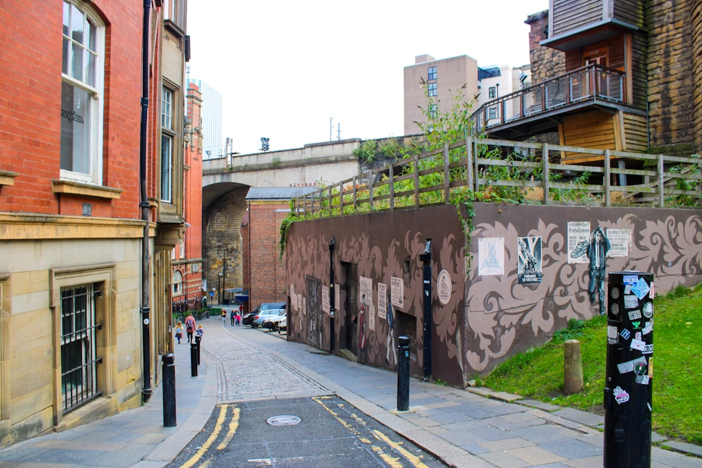

For owners weighing retaining walls newcastle options, the useful comparison is whether the wall type suits the block, the ground, the drainage load and the approval path before excavation starts.
Retaining Walls Newcastle Explained
Retaining Walls Newcastle presents the job as a block decision first, not a catalogue choice. That is a sensible starting point for Newcastle and Lake Macquarie sites because the published guide points to coastal sand, reactive clay, estuarine flats and former colliery ground as conditions that can change construction method, drainage detail and whether engineering is needed.
The wall types are described by use, which is more useful than comparing finishes in isolation. Concrete sleepers are positioned as a common option for sloping residential blocks. Timber sleepers are tied to garden terracing, low boundary retaining and level changes under 600mm. Core-filled block walls are described for taller engineered retaining and rendered finishes on tight inner-city blocks. Rock, boulder and gabion systems are framed around free-draining outcomes and sites where water movement needs to be handled rather than ignored.
Know when the approval path changes
The published guide gives a clear first screen for NSW work. It says a retaining wall is exempt development only if it clears every standard in the planning code, then names three checks that owners can test early, a 600mm maximum height, at least 1m from each lot boundary and at least 2m from any other retaining wall.
It also says walls outside those standards, or walls carrying a surcharge, move into a formal pathway through a Complying Development Certificate or a Development Application, with structural walls designed to AS 4678. For an owner, the practical question is what the wall is supporting. If the wall sits near a driveway, building area or another load, ask that question before fixing the layout. For a second editorial walkthrough, this retaining wall guide for Newcastle properties adds another planning checklist.
Treat drainage as structural work, not an extra
The strongest construction point in the guide is the drainage detail. It says agricultural drain, gravel and geotextile drainage belong behind every wall and states that drainage is the detail that stops most residential wall failures. That means two quotes with the same face material can still be very different jobs if one scope is vague about what sits behind the wall.
Ask for the drainage build-up in writing. The quote should state whether those components are included, what excavation and backfill assumptions have been made, and whether the scope changes if different ground conditions appear once the site is opened up. On a block where surface water already has an obvious path, a free-draining system may suit the brief better than a finish chosen only for appearance.
- Confirm agricultural drain, gravel and geotextile are listed.
- Check whether excavation and backfill are already priced.
- Ask how water exits the wall system once built.
Use the wall system as a decision path
Most owners are not choosing between eight equal options. They are trying to solve one of three project types already named in the guide, a new terrace, a failing wall, or a renovation that depends on getting levels right first. That is a better way to narrow the shortlist.
If the job is a low garden or boundary change and stays within the low-height use described in the guide, timber may stay in the frame. If the block is sloping and the brief is straightforward residential retaining, concrete sleepers are the more likely comparison point. If the wall is taller or clearly structural, the conversation shifts toward engineered systems such as core-filled block walls. If the site is erosion-prone or the brief needs a free-draining finish, gabion, rock or boulder walls deserve a closer look.
The guide also includes repairs and replacement for walls that are failing, bulging or cracked. Where movement has already started, replacement scope and approval checks should come before landscape detailing around the wall.
Compare written scopes, not loose estimates
The guide says pricing depends on the site rather than a phone estimate, and that providers visit the block and prepare a written scope before work starts. That is the right benchmark for comparing proposals because it forces the hard variables into the open, wall type, height, access, drainage, engineering and the reason the wall is being built.
A useful scope answers five points. It should identify the proposed system and why it suits the block. It should say whether the job remains within exempt development standards or needs formal approval. It should show whether AS 4678 engineering is part of the job where required. It should write drainage and subsoil details into the build-up. It should also state the assumptions around excavation, access and any demolition or replacement of an existing wall.
That approach will not make every quote identical, but it does make the differences visible before work begins.
- Define the brief. List the suburb or postcode, rough wall height and whether the project is a new terrace, replacement or renovation dependency.
- Screen the approval path. Use the published NSW checks as an initial filter, then confirm the position with council or a private certifier before work starts.
- Request a written scope. Ask for the proposed wall system, drainage detail, excavation assumptions and any engineering in writing.
- Check existing movement. If the current wall is bulging or cracked, settle the repair or replacement scope before planning adjoining works.
| Project situation | Likely fit from the guide | What to check before accepting the scope |
|---|---|---|
| Low garden terracing or a boundary level change under 600mm | Timber sleeper wall | Whether the work stays within exempt development standards and whether drainage is itemised |
| Sloping residential block | Concrete sleeper wall | Excavation assumptions, drainage build-up and why that system suits the soil and height |
| Taller structural retaining | Core-filled block wall | Engineering to AS 4678 and which approval pathway applies |
| Free-draining or erosion-prone site | Gabion, rock or boulder wall | How water movement is handled and whether the finish suits the block |
This guide covers wall selection, approval checks, drainage inclusions and quote review for retaining projects in Newcastle and Lake Macquarie.